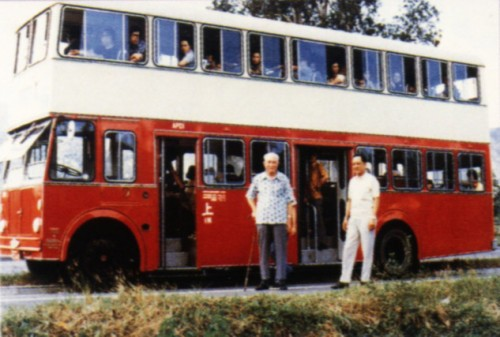

|
APD車系----Ashok Leyland "Titan" ALPD1/1 |
|
 |
70年代，正值中巴的黃金時代，在中巴不斷購入新款的「珍寶」巴士的同時，中巴亦不斷尋求其他車廠的產品，務求物色到更適合香港使用的車型。可是，「珍寶」巴士在70年代運作初期，仍然存在不少「水土不服」的問題，令兩巴仍然傾向選擇購入傳統的前置引擎新車，因前置引擎的設計始終比較勝任於香港的營運環境，又能提供較好的「爬山」能力，而巴士公司能更好掌握車輛的運作效果。 可是，由於英國車廠幾乎已不再生產傳統的前置引擎產品，把其生產線專注於英國本土應接不暇的後置引擎底盤訂單。這代表著中巴想要訂購傳統的車款，也是無能為力。 不過，當中巴得知印度一帶有「大英帝國」血統的車廠--"Ashok Leyland of Madras,India"，仍有生產傳統的前置引擎巴士時，中巴隨即便購入了一輛來香港作測試。 但或許大家會有疑問，印度當時的生產技術、素質真的能達到標準嗎? |
這家於1948年成立的印度車廠，初期名為Ashok Motor，以生產Austin汽車起家。於1950年，Ashok Motor獲英國利蘭車廠(British Leyland)授權，生產利蘭的商用車輛，供應印度市場。1954年，公司正式改名Ashok Leyland，成為英國利蘭旗下的車廠之一。
1968年，Ashok Leyland獲英國利蘭車廠授權生產Titan PD3底盤，Ashok Leyland開始生產其第一款雙層巴士產品--Ashok Titan ALPD1/1，供應印度本土市場，如孟買、加爾各答等大城市。這款雙層巴士，完全取材自Titan PD3。
這款雙層巴士在這些大城市大行其道，初期生產時，引擎採用馬力小的利蘭"Comet"引擎，但由於巴士在印度日常營運時，超載情況嚴重，一部標準的31呎雙層巴士，動輒運載超過200名乘客!!因此引擎除即改用大馬力的利蘭"O.600"引擎。
1970年，Ashok自行生產O.680引擎，ALPD1/1除即以這款引擎作為標準，配合利蘭生產的變速箱。就是這個幾乎跟英國巴士大同小異的產品，加上在熱帶地區行駛、超載嚴重仍能應付自如的結構，令中巴看上了這款雙層巴士。
上圖來源﹕香港巴士•陳自瑜•三聯書店